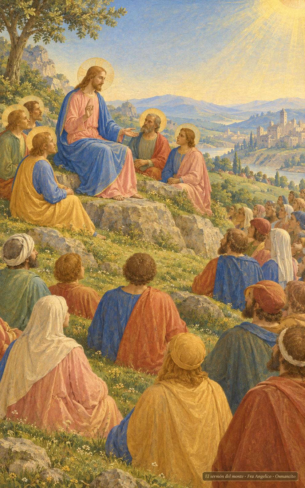
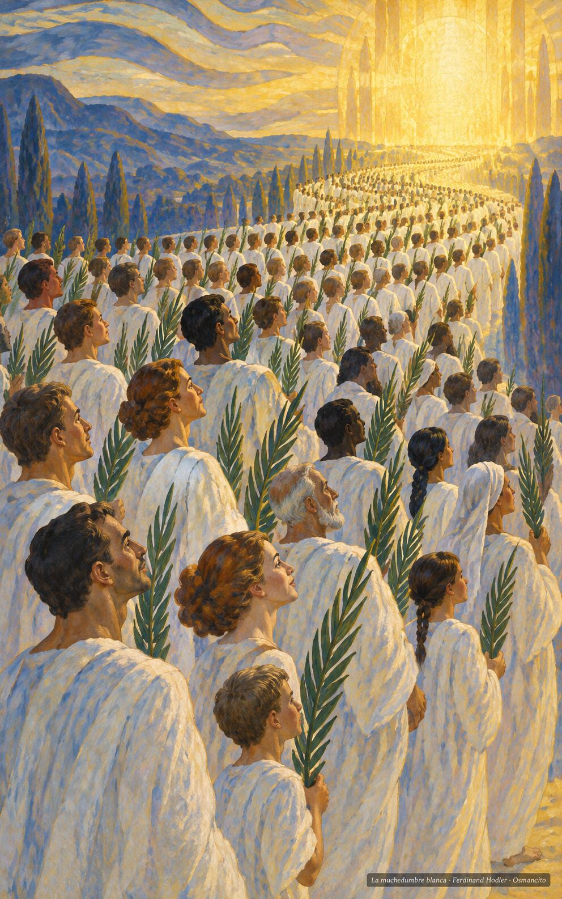
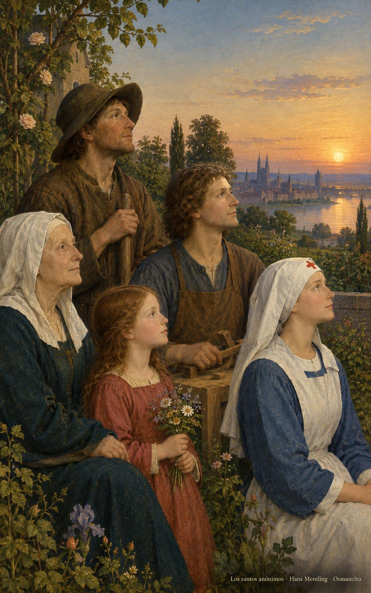

1 de noviembre de 2026
¡Buenos días!
Los dichosos
22
Dichosos los limpios de corazón, porque verán a Dios.
Mateo 5,8. Fuente
Que aprendamos la dicha al revés del mundo: dichosos los pobres, los que lloran, los sufridos, los que tienen hambre de justicia. Que seamos limpios de corazón para ver a Dios y trabajemos por la paz hasta que nos llamen hijos suyos. Que nos vista la muchedumbre que nadie puede contar, con la túnica lavada y la palma en la mano, seguros de que lo veremos tal cual es, desde ya mismo y para siempre.

- Jesús se sienta en la ladera y enseña a la muchedumbre reunida a sus pies: Mateo 5, las bienaventuranzas dichas desde el monte.

- La muchedumbre incontable de túnicas blancas y palmas avanza hacia la luz: Apocalipsis 7, los que lavaron su túnica.
¡Feliz domingo 1 de noviembre!
😊🙋♂
Solemnidad de Todos los Santos
Que la fiesta de todos los santos nos junte con los que ya llegaron: una muchedumbre de todas las naciones, sin nombre famoso, con la túnica blanqueada en la tribulación. Que nos consuele saber que la santidad no es uniforme ni rara: es la vida común llevada hasta el final con fidelidad. Que oigamos la llamada a ser hijos, y caminemos limpios de corazón hacia el rostro que nos espera, dichosos ya desde aquí abajo.

- La abuela, el campesino, la niña, el carpintero y la enfermera miran juntos hacia la luz: la santidad de la vida común, sin nombre famoso.
¡Feliz día de Todos los Santos!
© 2026 Osmancito